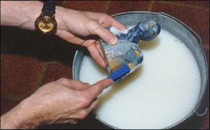
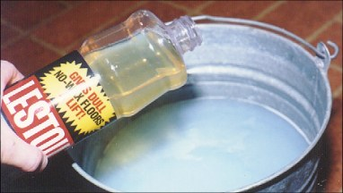
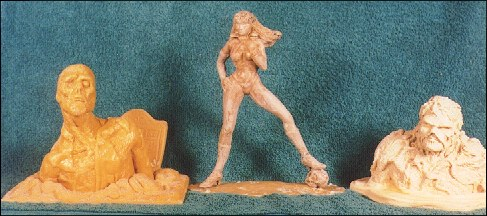

Have you ever looked at the resin or plastic kits in your collection and noticed that one or two stand out because the paint jobs were not up to the expectations that you had? Or you would like to change the paint scheme on a particular kit? Well what do you do? One thing you don't want to do is just paint over the existing paint job, because valuable detail could be lost. So the existing paint will have to [or should] be stripped from the kit. You ask HOW?
I am going to explain some ways of stripping paint from a model. There are lots of ways that have been used to remove paint from models. I will explain the methods that I have used, plus I will go over the pros and cons of each method.
First I will refer to the brake fluid method. This is just what it says, soak your kit in a pan of automotive brake fluid. After the figure has soaked for a while take a scrub brush and scrub off the loose paint. And if needed the kit can be placed back in the brake fluid and scrubbed again. This method works well in removing the paint, but care has to be taken. If you are stripping a plastic kit it might distort or become soft if you let it soak too long. Another problem with this method is that brake fluid is a petroleum based product. After the kit is stripped I will have to spend quite a bit of time cleaning off the brake fluid. If not cleaned properly the primer or paint will not adhere to the surface of the kit. Lastly I always have problems with disposing of the used brake fluid. I do not want to pour it down the drain and I can not dump it outside [my landlord would exterminate me]. I have used this method before
 |
| Supplies needed for stripping. |
|  |
| Mixing lestoil and water. |
and I know people who still use this method without problems, but for me I don't recommend it.
The next method is the Pine-Sol method. This is where a household cleaner [Pine-Sol] is used as a stripping solution. First you need a bucket or pan large enough to hold the figure you are going to strip. Next, mix up a high concentration of Pine- Sol and warm water. About two parts Pine-Sol to ten parts water. [This will also make your house smell pine forest fresh.) [You might want to move to the basement or garage if the smell becomes too strong.] Then fill the bucket or pan with the Pine- Sol solution and submerge the model in the solution. Note: Some types of models will float so they will have to be weighted down. I usually let the model soak for a couple of hours before I go back and start scrubbing off the loosened paint. As the model soaks, I will scrub it with a toothbrush or nail brush or fine steel wool to remove the paint. Once I can no longer scrub paint off I will again let the model soak in the Pine-Sol and then scrub again. Depending on the type of paint this process may take a couple of days. After all of the surface paint is removed I will use a dental pick to get into the recessed detail and remove the paint from these areas. This process works well and is relatively inexpensive, but it is also slow and requires a little muscle work. I have also found that any area covered with a gloss sealant does not loosen up easily with this method.
Another method using a household cleaner is the Lestoil method. I use Lestoil and mix it in the same fashion as I did with the Pine-Sol. The steps used in soaking and scrubbing are exactly the same. I have found that the Lestoil seems to loosen up the paint quicker and it will cut through any clear coat that has been applied. Both of the methods [Pine-Sol and Lestoil] are safe and inexpensive ways of stripping kits. Though both are slow and require some muscle work the end product is that the kit is free of paint.
Next I am going to get into a couple commercial type paint strippers I have tried. The first type is a stripper used by professional painters and it is Methyl Ethyl Keytone or M.E.K. I will state right off that I do not recommend this being
|  |
| Scrubing the paint off after soaking. |
used by young modelers. M.E.K. is some nasty stuff. M.E.K. works extremely well and fast, but it is highly combustible and the fumes that it gives off are strong and hazardous. If you do use M.E.K. make sure and use it in a well ventilated area, [like the back yard] and use a ventilator mask. Methyl Ethyl Keytone will have to be purchased at a commercial paint Sup- ply house. Again I do not recommend this method because of the hazards.
The last method is a stripping solution by polly S called E.L.O., which stands for Easy Lift Off. E.L.O. is used for stripping paint and decals off of kits. It comes in an eight ounce bottle for about $6.00 and is safe on most plastics and met als. To use E.L.O. I apply it to the kit with a paint brush. I will then allow the E.L.O. to remain on the kit until the paint starts to wrinkle. As the coatings of paint start to loosen up, I begin to scrub with a toothbrush or nail brush. I will continue this routine until the kit is free of paint. After the model is
 |
| Applying Easy-Lift-Off to the kit. |
|  |
| Stripped kits ready for priming and painting. |
stripped I will clean it with mild soapy water. A drawback to E.L.O. is that it also gives off strong fumes. It is a chemical stripper and should be used in a well ventilated area. E.L.O. works extremely well and is available at most hobby shops that sell Polly S paints.
As I said in the beginning these are some of the methods I
have used, and I am sure there are many more ways of
stripping kits. If you have any suggestions, questions, or
comments please send them to:
Rich Larson
Some Assembly Required
PO Box 884
Norwalk, Ohio 44857-0884
Originally published, as black and white, in
KitBuilders Magazine.
Reprinted here, in color, with permission. Thanks, KitBuilders!
The Gremlins in the Garage webzine is a production of Firefly Design. If you have any questions or comments please get in touch.
Copyright © 1994-1997 Firefly Design.